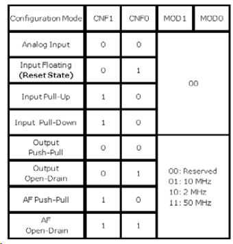
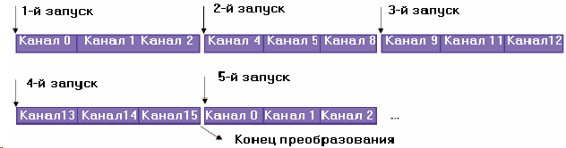
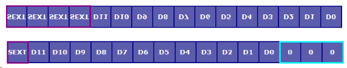
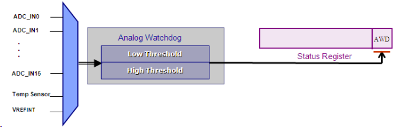

5. ПЕРИФЕРИЯ
В STM32 обычно 5 портов по 16 линий ввода-вывода. У каждого порта имеется 2 конфигурационных регистра по 32-бита. Совместно они образуют 64-битный конфигурационный регистр. Эти 64 бита разделены на 4-битные поля, позволяющие настроить соответствующую им линию ввода-вывода. В свою очередь, 4-битное поле конфигурации состоит из 2-битного поля режима и 2-битного поля конфигурации. Поле режима позволяет указать, в каком направлении работает линия: на ввод или на вывод, а поле конфигурации позволяет настроить характеристики управления:

После завершения настройки портов, конфигурационные параметры можно защитить. Для этого необходимо выполнить запись в регистр блокировки конфигурации. В этом регистре для каждого вывода предусмотрен бит блокировки. После его установки блокируется возможность записи в соответствующие поля конфигурации и режима. После установки всех требуемых бит блокировки, необходимо в бит 16 регистра блокировки записать последовательность 1, 0, 1. Этим будет активизирована блокировка. Убедиться в активизации блокировки можно, если сразу после записи выполнить подряд два считывания этого же бита. Считывание значений 0, 1 свидетельствует об успешной активации блокировки.
Доступ к линиям ввода-вывода осуществляется через регистры ввода и вывода данных. Для выполнения действий над отдельными битами можно использовать либо поддерживаемый ядром Cortex способ "bit banding" применительно к регистрам ввода и вывода, либо воспользоваться двумя специальными регистрами битовой обработки. Регистр установки/сброса бит - 32-битный регистр. Верхние 16 бит связаны с каждой из линий ПВВ. Запись в них логической 1 приводит к сбросу соответствующей линии ввода-вывода. Идентично этому, запись логической 1 в любой из младших 16 бит приведет к установке соответствующей линии ввода-вывода. Второй регистр битовой обработки - регистр сброса бит. Этот регистр 16-битный. Запись в его биты логических 1 приводит к сбросу соответствующих линий ввода-вывода.
Альтернативные функции
Альтернативные функции у МК STM32 управляются через регистр переназначения и отладки. Каждое из цифровых УВВ (UART, CAN, таймеры, I2C и SPI) имеет одно- или двухбитное поле, которое позволяет назначить работу с различной комбинацией выводов. После выбора альтернативных функций выводов, необходимо в конфигурационных регистрах ПВВ переключить назначение вывода с линии ввода-вывода на альтернативную функцию. Регистр переназначения также управляет конфигурацией выводов отладочного JTAG-порта. Сразу после сброса, порт JTAG активизируется с отключенной функцией трассировки данных. JTAG можно переключить в режим двухпроводного отладочного интерфейса, а неиспользуемые выводы использовать в качестве линий ввода-вывода общего назначения.
Внешние прерывания
Блок внешних прерываний имеет 19 линий прерываний, которые связываются векторами через NVIC. Из них 16 линий связаны с линиями GPIO и могут генерировать прерывание по нарастающему или подающему фронту, или же по обоим фронтам. Оставшиеся три линии связаны с линией прерывания RTC, линией возобновления работы порта USB и выходом сигнализации блока контроля напряжения питания. NVIC предоставляет отдельные векторы прерываний для линий внешних прерываний (EXTI).
Каждую из 16 линий EXTI можно связать с соответствующей линией ввода-вывода любого из портов. Для этого предусмотрены четыре конфигурационных регистра. Данные регистры разделены на четырехбитные поля, связанные с каждой линией EXTI. С помощью данного поля каждую линию EXTI можно связать с любым из пяти GPIO, например, линию EXTI0 можно связать с линией 0 порта A, B, C, D или E. Такой подход позволяет использовать любой из выводов МК в качестве линии прерывания. Функцию EXTI можно также использовать в связке с альтернативной функцией, активизированной на внешнем выводе.
//Назначение функций внешних прерываний линиям GPIO
AFIO->EXTICR[0] = 0x00000000;
//Разрешение источников внешних прерываний
EXTI->IMR = 0x00000001;
//Разрешение возобновления при внешних событиях
EXTI->EMR = 0x00000000;
//Выбор падающего фронта в качестве источника запуска
EXTI->FTSR = 0x00000001;
//Выбор нарастающего фронта в качестве источника запуска
EXTI->RTSR = 0x00000000;
//Разрешение источников прерываний в NVIC
NVIC->Enable[0] = 0x00000040;
NVIC->Enable[1] = 0x00000000;
После установки регистров конфигурации EXTI, каждое внешнее прерывание можно настроить на генерацию прерывания по нарастающему или падающему фронтам. Также предусмотрена возможность принудительной генерации прерывания EXTI путем записи в соответствующие биты регистра программного прерывания.
ADC
В зависимости от модели, в микроконтроллеры STM32 может быть встроен один или несколько аналогово-цифровых преобразователей. АЦП питаются отдельным напряжением, которое в зависимости типа корпуса может находиться в пределах 2.4 - 3.6В. Источник опорного напряжения (ИОН) АЦП соединен либо внутренне с напряжением питания АЦП, либо со специальными внешними выводами. АЦП характеризуется 12-битной разрешающей способностью и частотой преобразования 1МГц. У него имеется до 18 мультиплексированных каналов, 16 из которых можно использовать для измерения внешних сигналов. Оставшиеся два канала связаны со встроенным датчиком температуры и внутренним ИОН.
АЦП поддерживает возможность раздельного программирования времени преобразования в каждом из каналов. Всего предусмотрена возможность выбора 8 дискретных значений из диапазона от 1.5 до 239.5 циклов.
Каждый АЦП поддерживает два базовых режима преобразования: регулярный и инжектированный.
В режиме регулярных преобразований задается канал или группа каналов, которые в дальнейшем преобразовываются поочередно. Число каналов в группе регулярных преобразований конфигурируется пользователем (до 16 каналов). Кроме того, можно задавать порядок преобразования каналов, а один и тот же канал канал в цикле преобразования может быть оцифрован несколько раз. Группа регулярных преобразований запускается программно или аппаратно различными сигналами таймеров или по 1-ой линии внешних прерываний (EXTI 1). Сразу после запуска, преобразования в регулярной группе выполняются непрерывно. Альтернативно, группа может работать в режиме с остановкой преобразования, когда по завершении оцифровки выбранных каналов преобразование приостанавливается вплоть до следующего запуска группы регулярных преобразований.

Каждый раз, когда завершается оцифровка в группе регулярных преобразований, результат преобразования помещается в единственный регистр результата преобразования и генерируется прерывание. 12-битный результат хранится в 16-битном регистре с левым или правым выравниванием бит.
У АЦП1 имеется специальный канал ПДП, который может использоваться для передачи каждого результата преобразования в организованный в памяти буфер данных. Использование данного метода позволяет сократить частоту генерации прерываний до одного по завершении каждого цикла оцифровки группы регулярных преобразований. Более продвинутым методом является использование двойного буфера, который позволяет выполнять обработку накопленных данных из одной части буфера и, при этом, продолжать записывать результаты преобразований во вторую часть буфера, а по завершении цикла преобразования наоборот - обрабатывать данные из второй части, а помещать новые данные в первую. Для реализации данного метода необходимо использовать прерывания по половинному и полному завершению ПДП, а также режим кольцевого буфера в блоке ПДП.
Другая группа преобразований называется инжектированной. В последовательность преобразований инжектированной группы может входить до четырех каналов, а запуск преобразований выполняется программно или аппаратно. Сразу после запуска этой группы, приостанавливается оцифровка в группе регулярных преобразований, выполняется собственная последовательность преобразований, а затем возобновляется очередность преобразований в регулярной группе. Также как и в случае регулярной группы, может быть заданы любая последовательность каналов и многократное преобразование одного и того же канала в одной последовательности преобразований. Однако, в отличие от регулярной группы, у каждого инжектированного преобразования имеется свой собственный регистр результата и регистр смещения.

В регистр смещения можно запрограммировать 16-битное значение, которое автоматически вычитается из результата преобразования АЦП. Если результирующее значение - отрицательное, то регистр результата инжектированной группы дополняется знаком. Также как и в регулярной группе, результат может храниться с правым или левым выравниванием.
Помимо двух режимов преобразования, АЦП поддерживают функцию оконного компаратора, которая заключается в генерации прерывания при выходе результата преобразования за пределы заданных пользователем нижней и верхней границ (условия снижения и превышения напряжения, соответственно). Оконный компаратор может использоваться для мониторинга выбранного регулярного или инжектированного канала, или же всех регулярных или инжектированных каналов. Помимо мониторинга напряжения, функция оконного компаратора может использоваться в качестве детектора пересечения нуля.
